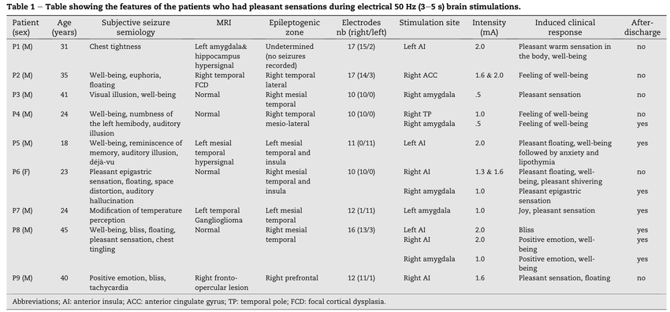
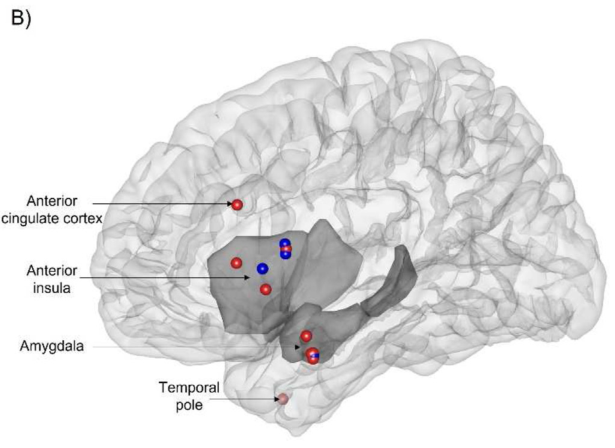

author: niplav, created: 2023-04-07, modified: 2024-10-15, language: english, status: notes, importance: 9, confidence: likely
A collection of quotes and sources of various methods for generating valence through brain stimulation and biofeedback, focusing on invasive stimulation.
HIGH ON THE WIRE BUT I WON'T TRIP IT
HIGH ON THE WIRE BUT I WON'T TRIP IT
HIGH ON THE WIRE BUT I WON'T TRIP IT
EYES ON THE PRIZE OR YOU MIGHT MISS IT
—Worthikids, “Wire”, 2021
See Constantin 2023a for a general overview for neuroenhancement, Constantin 2023b and Constantin 2023c for an overview of studies on ultrasound stimulation, and Constantin 2023d for more information on companies working on ultrasound for neuromodulation in particular.
The project follows standard neuroscience research protocols. In the lab, study subjects (novices as well as experienced meditators), don something that looks like a hairnet studded with ultrasonic transducers. Over a period of five or 10 minutes, they receive intermittent pulses of ultrasound energy. Ultrasound frequencies are far above the threshold of human hearing, so the test subjects feel no sensations, and because this is a placebo-controlled study, some people receive no stimulation at all.
Participants may also undergo ultrasound stimulation while lying in an MRI scanner that enables the researchers to gauge how different brain regions respond to the intervention. “The biggest brain and subjective reports are at about 20 minutes post-ultrasound,” Sanguinetti says. “So there’s some change in the way the brain regions are talking to each other.”
[…]
The primary target is the posterior cingulate cortex (PCC), a region deep in the brain that is massively connected with other structures and is associated with the default mode network—active during daydreaming and mind-wandering. Young and Sanguinetti theorize that the ultrasound energy mutes activity in the PCC in much the same way meditation tames the “monkey mind.”
[…]
Experienced meditators report significant effects after undergoing the ultrasound sessions, Sanguinetti says.
[…]
Adds Young, “We get these equanimity-related reports from the participants without prompting. They don’t know that we’re looking into anything related to meditation—we’re just some mad scientists that want to put energy into their brain. They on their own report some very meditation-like things.”
[…]
“The general effect was, within the first week, an extreme quieting of both inner and external space. The inner space became much stiller than I was able to accomplish just by sitting for 45 minutes every day. With the PCC ultrasound, it was within the first five minutes.”
—Michael Haederle, “Equanimity On Demand: Can Brain Stimulation Technology Mimic the Effects of Meditation?”, 2021
During the individual's two-month post-completion evaluation, he showed a significant score decrease in mood inventories, with virtually no remaining anxiety or depression. The response pattern observed may demonstrate that fUS [focused ultra-sound] targeting the amygdala produces very specific symptom relief in anxiety, but not in depression and obsessive thinking. In this previously treatment-resistant individual, anxiety may have prevented the therapeutic response to previous treatments for comorbid conditions in these patients. Indeed, extremely high levels of general anxiety are often considered to be markers of non-response to antidepressants, therapy, rTMS and ECT.
—Zielinski et al., “A Case Study of Low-Intensity Focused Ultrasound For Treatment-Resistant Generalized Anxiety Disorder and Major Depressive Disorder”, 2021
In three previous experiments, we reported that TUS targeting the right inferior frontal gyrus (rIFG) enhanced mood in healthy volunteers. […] Resting state fMRI was recorded at baseline (N=9). Focused TUS (500 kHz, Ispta=272 mW/cm²) was delivered to the rIFG for 2 minutes and resting state fMRI was recorded again 25 minutes later. […]
Previous self-report mood effects were replicated: Participants reported an enhancement of overall mood 25 minutes after TUS, p=0.022 (Bonferroni corrected).
—Jay Sanguinetti/John J. B. Allen, “Transcranial Ultrasound Improves Mood and Affects Resting State Functional Connectivity in Healthy Volunteers”, 2017
Participants: 26 young adults with Beck Depression Inventory […]
TUS Parameters: 30 secs, 500 kHz; PRF 40 Hz; lower power than previous studies (11% vs. 21%) due to repeated stimulation. transducer over right inforerior frontal gyrus (rIFG)[…]
Replicating past effects, TUS stimulation compared to TUS sham improved mood 10 minutes after stimulation Day 1, r=.757, p<.01. […]
• TUS over the right IFG may impact anxiety rather than depression-related symptoms, via reducing repetitive thought that is future-rather than past-focused
—Reznik et al. 2014, “Transcranial ultrasound (TUS) reduces worry in a five-day double-blind pilot study”, 2014
Worry decreased, r(22)=.363, p=.097, depression scores didn't change r=-.237, p=.288.
We found a male predominance among the patients reporting pleasant sensations and a prominent role of the right cerebral hemisphere. Results show a preponderant role of the dorsal anterior insula and amygdala in the occurrence of pleasant sensations.
[…]
A pleasant sensation was reported during only 13 of these stimulations (i.e., .60% of all responses) in nine patients (i.e., 2.74% of the sample), making it a very rare experiential phenomenon evoked by EBS. By contrast, 111 emotional responses of negative valence (i.e., 5.13% of all responses) were observed in the same cohort of the patients in 50 patients (i.e., 15.2% of the sample).
[…]
Among the nine patients (P1 to P9) who reported pleasant sensations, three (P4, P6 and P8) showed responses to several EBS […]. Regarding the experienced phenomena, a pleasant sensation was reported by six patients, well-being by six patients, positive emotion or joy was reported by two patients and bliss by one patient. These positive sensations were accompanied by sensations of floating (three patients), warmth (one patient) or shivering (one patient). Of note, patient P5 presented a change in emotional valence of his semiology during the same stimulation, starting with a pleasant floating sensation and well-being followed by an unpleasant sensation of anxiety.
[…]


[…]
Electrode contacts where a pleasant sensation could be evoked were mostly located in the anterior insula (AI, a total of six stimulation, right AI: n=3, left AI: n=3) and in the amygdala (five stimulation; right amygdala: n=4, left amygdala: n=1) […]. Overall, most EBS that evoked pleasant sensations were applied to the right cerebral hemisphere (n=9) whereas only four were applied to the left hemisphere. In two patients, (P( and P8), the same sensation could be elicited from two different brain structures, i.e., a feeling of well-being by EBS in the right temporal pole and the amygdala (P4) and a positive emotion and well-being by EBS in the AI and the amygdala (P8).
—Villard et al., “The origin of pleasant sensations: Insight from direct electrical brain stimulation”, 2023
Inducing signals directly into the brain reward systems is sometimes called “wireheading” (after the original deep brain stimulation experiments in rats by James Olds and Peter Milner [2201]). Brain stimulation reward (BSR) is strongly reinforcing, producing a very strong drive and does not habituate [3083, 3084]. While it is not simply producing pleasure (there is at least a distinction between appetitive “wanting”, hedonic “liking”, and the behaviour-changing learning, in principle they might be dissociable [1685])" "We usually call compulsions addictions when they become life-impairing, but most of us are already subject to strong motivational feedbacks involving money, food, sex and books that may shape our lives in important ways but are often not recognized as compulsions
—Anders Sandberg, “Grand Futures” p. 210, 2023
Feelings of well-being are not just determined by outside factors. Happiness has a strong genetic component, ranging from 30-80% of the variation depending on study […]. Stable, dispositional subjective well-being seems to be strongly heritable, near 80% [2147]: the hedonic setpoint is strongly affected by genetic factors.
—Anders Sandberg, “Grand Futures” p. 213, 2023
There are also rare cases of brain lesions apparently affecting hedonic setpoint. A frontal lobe stroke made a man apparently “unable to feel sadness” and appear to have gained a highly positive outlook on life[…].
—Anders Sandberg, “Grand Futures” p. 217, 2023
The known “liking” hotspots involve the nucleus accumbens shell[…], parts of the ventral pallidum, the parabrachial nucleus of the pons, and perhaps in orbifrontal cortex and insula.
[…]
"stimulation of more posterior parts of the NAc shell appears to trigger dread and disgust; even more intriguing the “affective keyboard” of the shell can be modulated by context, experience and drugs to expand or shrink the “liking” region
—Anders Sandberg, “Grand Futures” p. 218, 2023